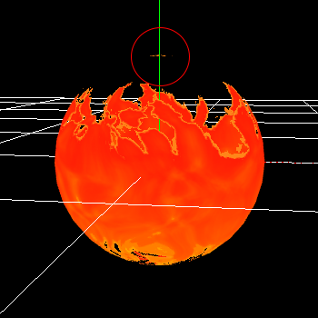

02. マテリアルでトゥーン風の炎を表現する。¶
作成¶
ただ、本章では様々な画像や3Dモデルを使用します。 ここに関しては慣れているソフトで似たような素材データを作成しましょう。
それらのデータを作成するのは手間がかかるため、既に作成した素材データをこちらに用意しました。 作成方法も少し解説しますが、素材の作成ができなかったり、作成するのが面倒な方はこれらを使用してください。
既にモデルとマテリアルは設定してあります。 マテリアルの新規作成や基本的な使い方は前章を参照してください。
まずは最初に雲模様のグレー画像を流れるように表示します。
画像参照ノード を追加して、画像には Textures/Noise1.png を選択します。
このままだと、ただ画像が表示されるだけです。
動かすために 移動UVノード を追加します。
そして、画像参照ノードに接続します。
移動UVノード の速度には (0.0, 0.4) を入力します。
上下方向に画像が流れるようになりました。
ただ、このままでは雲模様が粗すぎるので細かくします。
画像参照ノード のUVに掛け算を接続します。
掛け算の値には移動UVノードの出力と (4.0, 1.0) を指定します。
そうすると、画像のUV座標の1が4になります。 ということは、今まで1枚表示されていた範囲に4枚表示されます。 今回は横方向にたくさん表示されるようになります。
このままでは全く炎に見えません。 動きを複雑にするために歪みを加えます。
画像参照ノードを追加して、歪み画像 Textures/Normal1.pngを選択します。
要素抽出ノードを追加し、RGを抽出します。 そして引き算ノードを追加し、0.5を引きます。 歪み画像の赤色と緑色は0.5を0として、上下左右に歪ませるようになっています。 そのため、中央の0.5を引きます。
さらに、歪みの強さを調節するために0.5を掛けます。
そして、歪みの値をUVに足します。
そうすると、画像が歪むようになりました。 なんとなく炎に見えるかもしれません。
炎は上のほうが暗く、下のほうが明るくなります。 それを再現するために、グラデーション画像を足したりかけたりします。
画像参照ノードで画像 Textures/Gradation1.png を追加します。
そして、先ほどの歪み画像と足し算ノードで足します。
下のほうが光る画像になりました。
次に上のほうを暗くするために、先ほどの画像を掛け算ノードで掛けます。
そうすると上のほうが暗くなりました。 なんとなく炎のようになってきました。
最後に、着色します。
着色には色のついたグラデーションの画像を使用します。
画像参照ノードで画像 Textures/Gradation2.png を追加します。
そして、要素抽出ノードで先ほどの流れる画像からRGを抽出します。 それをUVに入力します。
グラデーションの画像に沿って色が変わるようになりました。 入力された流れる画像の色に従って、グラデーション画像の参照する位置が変わっています。 そのため、グラデーションに従って色が変わるようになります。
同様に、透明度も変更します。
画像参照ノードで画像 Textures/Gradation3.png を追加します。
同様に流れる画像を接続します。白い部分が不透明、黒い部分が透明になります。
画像参照ノードの出力をEmmisiveに接続します。
画像参照ノードの出力をOpacityMaskに接続します。
炎の模様が表示されました。
ですが、細かい部分の色がおかしくなっています。
その原因は画像参照ノードで画像を参照するときに、リピートが選択されていることです。
画像にはクランプとリピートというものがあります。 これは、端をどう扱うか、というパラメーターです。
UV座標が1.0を超えた時、端を端の色として扱うか、端を繰り返すかを指定できます。 端の方を参照するとき、リピートに設定していると反対側を参照します。 そのため、色がおかしくなります。
グラデーションの画像参照ノードのリピートをクランプに変更します。
これで完成です。
最後に、本章で作成されたエフェクトをダウンロードできるようにしてみました。
雲画像の作成方法¶
今回はPhotoShopを使用しています。 解像度1024の画像を新規作成し、PhotoShopで雲1を選択します。 コントラストを高め、白と黒が強く出るようにします。
そして、解像度を512に小さくして保存します。
歪み画像の作成方法¶
今回はPhotoShopを使用しています。 解像度1024の画像を新規作成し、PhotoShopで雲1を選択します。
次に3072x3072の画像を作成します。 先ほどの雲模様を9個コピーします。 これは、ループ画像を簡単に作れるようにするためです。 そして、法線を作成します。
最後に、中央の1024x1024の画像を切り取り、512に縮小して保存します。
グラデーション画像の作成方法¶
PhotoShopのグラデーションで作成しています。 トゥーンなので、色が急に変化するようにしています。
まとめ¶
本章では炎を作成しました。 わかりやすくするために画像を複数分けていますが、実際は軽くするために画像を結合することもあります。
ただ、このままでは固定された連続の炎が流れるのみです。 次章では、これを様々なものに応用できるようにします。